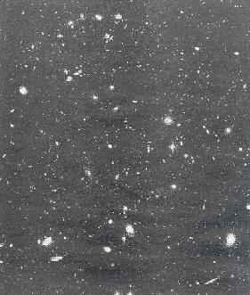

1.-
Una espiral al revés
2.- El "Hubble"
fotografía varias de las primeras galaxias del universo
Una
espiral al revés
01.- En el universo, nada está quieto. Todo gira en relación con algo. El Sol, que está en un brazo espiral de la Vía Láctea, tarda 250 millones de años en completar un giro alrededor de la galaxia. La galaxia espiral de la imagen se llama NGC 4622, queda a 111 millones de años luz en la constelación del Centauro y ha supuesto una sorpresa. El problema es que sus brazos espirales interiores parecen estar girando en sentido opuesto a los exteriores; unos brazos sugerirían un giro en sentido contrario al de las agujas del reloj, y los otros, al revés. No se conoce otro caso similar en el zoo de objetos astronómicos. ¿Qué ha pasado para que NGC 4622 sea tan especial? Los astrónomos sugieren que esta galaxia engulló en el pasado a otra galaxia espiral más pequeña, cuyo movimiento se ha conservado. Las observaciones con que se construyó esta imagen fueron tomadas en mayo de 2001. Se emplearon filtros ultravioleta, infrarrojo, azul y verde.
COMO
LA BRISA EN EL LAGO, EL VIENTO
ESTELAR
GENERAL “OLAS”. SOLO QUE SU
ALTURA ES DE 100.000 MILLONES DE KMTS.
02.- Otra nebulosa planetaria, una estructura generada cuando una estrella de masa similar a la del Sol envejece y empieza a expulsar material al medio. La nebulosa de la Araña Roja, o NGC 6537, tiene de peculiar al menos dos detalles. La estrella moribunda en cuestión está tan caliente que emite sobre todo en rayos X, por eso el Hubble, que no detecta este tipo de radiación, no la ve. La otra peculiaridad es que el viento estelar ha generado olas en el material circundante de 100.000 millones de kilómetros de altura. Más o menos como las olas que levanta la brisa en un lago terrestre, sólo que los astrónomos estiman que el viento estelar debe de soplar a entre 7 y 16 millones de kilómetros por hora. Además, la estrella central ha calentado también el gas, a unos 10.000 grados.
La nebulosa de la Araña Roja está a unos 3.000 años luz de distancia, en la constelación de Sagitario. Para producir esta imagen se combinaron observaciones con cinco filtros distintos, realizadas en septiembre de 1997.
03.-
Muchas estrellas
hacen una galaxia, y muchas galaxias, un cúmulo. La imagen muestra uno
de estos cúmulos, catalogado como 2218 Abell, a unos 2.000 millones de
años luz. En él se acumula tanta materia que su atracción
gravitatoria es enorme, lo cual afecta incluso a las partículas de luz.
Esto tiene una consecuencia muy útil para los astrónomos. Cuando
la luz de objetos más alejados pasa cerca de este cúmulo de galaxias,
la gravedad desvía su trayectoria; el resultado es que se forma una imagen
amplificada de esos objetos lejanos, que de otra manera no serían visibles.
El cúmulo de galaxias funciona como un zoom.
Ahora bien, las imágenes amplificadas
también suelen estar distorsionadas. Son los arcos que se observan en
la imagen. En este caso, las galaxias amplificadas están entre 5 y 10
veces más lejos que las que forman el cúmulo 2218 Abell. Las observaciones
con que se construyó esta imagen fueron tomadas entre el 11 y el 13 de
enero del año 2000, poco después de que los astronautas repararan
los giroscopios con que se orienta el telescopio e instalaran un nuevo equipo
informático a bordo.
04.-Júpiter es el quinto planeta del sistema solar y su rey indiscutible: su masa es 318 veces la de la Tierra. Es el cuarto objeto más luminoso del cielo nocturno, tras la Luna, Venus y Marte. Tiene anillos y unas cuarenta lunas -se siguen descubriendo lunas nuevas cada poco- Una de las más espectaculares es lo, cuya sombra es el punto oscuro en la imagen. ío es el objeto con más actividad volcánica de todo el sistema solar. Su volcán Pele expulsa material a cientos de kilómetros de altura, hasta el punto de que lo han visto no sólo las misiones espaciales que han visitado de cerca el sistema, como las Voyager, a finales de los setenta, y la nave Galileo, que aún envía datos. También el Hubble lo ha visto. Esta imagen se tomó en julio de 1996.
05.- La nebulosa de la Tarántula está en la Gran Nube de Magallanes, una pequeña galaxia vecina de la Vía Láctea. Su visión es una estampa del cielo de muerte y vida estelar.
Los filamentos que se observan hacia la esquina superior izquierda de la imagen son gas, y se forman porque cerca -visibles en la esquina inferior derecha- hay estrellas muy masivas que han explotado -muerto- como supernovas. Las supernovas han expulsado al medio interestelar enormes cantidades de nuevo gas, que ha comprimido el que ya estaba. Así se han formado los filamentos. Por esa compresión es probable que dentro de miles de años nazcan nuevas estrellas en la nebulosa de la Tarántula.
06.- Las estrellas brillan porque en su interior se producen reacciones nucleares que liberan energía. Cuando se acaba el combustible para esas reacciones, la estrella muere, de forma distinta según sea la masa de la estrella. Las estrellas de masa parecida a la del Sol se convierten en nebulosas planetarias antes de extinguirse del todo. La imagen muestra la nebulosa de la Calabaza, a 5.000 años luz de distancia, en la constelación de Puppis. En realidad es una nebulosa protoplanetaria, que aún no ha acabado de formarse. Hace un millar de años, una estrella moribunda empezó a expulsar gas a gran velocidad, en direcciones opuestas. Los astrónomos creen que este viento alcanza 1,5 millones de kilómetros por hora (coloreado de amarillo en la imagen), en un proceso de eyección tan eficiente que la mayor parte de la masa de la estrella está contenida ahora en estas estructuras bipolares. La estrella central se oculta en el centro bajo una nube de polvo opaco.
Dada su gran velocidad, el gas expulsado ha creado un frente de choque -al colisionar contra el gas del espacio circundante-, azul en la imagen. Según el astrónomo Valentín Bujarrabal, del Observatorio Astronómico Nacional y autor de las observaciones, es la primera vez que se puede estudiar este frente de choque con tanto detalle. Las observaciones se hicieron en diciembre del año 2000 con filtros que dejaban pasar la radiación del hidrógeno íonizado y del nitrógeno, lo que permitió distinguir el gas más caliente, comprimido por la onda de choque. La estructura bipolar de la nebulosa mide alrededor de 1,4 años luz de extremo a extremo.
07.-
Éste es un auténtico caso de guerra de las galaxias. El
Quinteto de Stephan, un grupo de cinco galaxias muy juntas descubierto por Edouard
M.Stephan en 1877. Están a 270 millones de años luz de distancia,
en la constelación de Pegaso. La interacción gravitatoria entre
algunos de sus miembros los ha deformado, pero al mismo tiempo ha estimulado
la formación de miles de millones de estrellas nuevas e incluso de galaxias
enanas. En las observaciones de diciembre de 1998 y junio de 1997 con que se
construyó esta imagen, los astrónomos han podido determinar a
grandes trazos la historia de este quinteto. Saben que algunos de los nuevos
cúmulos de estrellas empezaron a formarse hace mil millones de años,
mientras que otros no tienen más de dos millones.
08.- En el interior de una estrella hay un permanente combate de fuerzas. La fuerza de la gravedad tira hacia el centro del astro, pero la energía que éste obtiene de las reacciones nucleares en su interior -responsables del brillo- evita una implosión. Cuando la estrella, al final de su vida, agota su combustible, la gravedad acaba por imponerse y la estrella pierde su equilibrio. Eso le ocurrió a la estrella de la imagen hace varios miles de años. Tras agotar la mayor parte de su combustible empezó a expeler gas y polvo..., y el resultado es la nebulosa del Anillo, o M57. En el centro del anillo, la vieja estrella ha reducido muchísimo su masa; apenas se ve. En el futuro, el gas acabará por disiparse en el medio interestelar y quedará sólo una enana blanca, un cadáver de estrella sin brillo. M57 está a unos 2.000 años luz hacia la constelación de la Lyra. La imagen ha sido coloreada representando tres elementos químicos: el azul es helio, el verde, oxígeno, y el rojo, nitrógeno.
09.- Parece una galaxia que escapa a toda velocidad, pero en realidad es una galaxia herida después de un choque. Los astrónomos creen que esta galaxia, llamada UGC 10214 y apodada Renacuajo, y otra galaxia vecina más pequeña, visible en la parte superior izquierda de la imagen, estuvieron demasiado cerca en el pasado: el tirón gravitatorio de ambas acabó por deformarlas. La larga cola de la Renacuajo la componen miles de millones de estrellas nuevas, que se están formando precisamente porque el gas de ambas galaxias se comprimió.
Las estrellas nacen en nubes de gas, cuando éste se comprime tanto que los núcleos atómicos se fusionan -una reacción nuclear durante la que se libera gran cantidad de energía- La Renacuajo está a unos 420 millones de años luz en la constelación del Dragón, y su cola se extiende unos 280.000 años luz.
Pero,
para los astrónomos, lo más impactante de esta imagen es el fondo.
La imagen fue tomada el pasado 1 de abril con una nueva cámara recién
instalada por los astronautas en el Hubble, y el fondo es una prueba
de que esa cámara efectivamente funciona: eso que parecen modestos puntitos
blancos son nada menos que¡ 6.000 galaxias ! "Tienen miríadas
de formas", dice el pie de foto elaborado por la NASA. "Representan
muestras fósiles de los 13.000 millones de años de evolución
del universo".
La imagen en color está construida con tres observaciones distintas tomadas con filtros de infrarrojo cercano, naranja y azul.
10.- Si hay un señor de los anillos, es Saturno. Su compañero Júpiter también los tiene, pero menos espectaculares. Júpiter, Saturno, Neptuno y Urano son los gigantes gaseosos. Están hechos en su mayoría de gas. Saturno gira muy rápidamente sobre sí mismo: su día dura apenas 10 horas. Sin embargo, necesita 29 años terrestres para completar un giro alrededor del Sol. El eje de Saturno, como el terrestre, está inclinado respecto al plano de su órbita, y por eso, como la Tierra, Saturno tiene estaciones.
A medida que el planeta completa su órbita, primero un hemisferio y luego el otro quedan inclinados hacia el Sol, y estos cambios cíclicos son los que provocan las estaciones. Las imágenes de la secuencia se tomaron entre 1997 y 2000. En la primera (inferior izquierda) es otoño en el hemisferio norte y primavera en el sur. En la última imagen, el hemisferio sur está en su momento de máxima inclinación hacia el Sol, o sea, que es verano en el sur e invierno en el norte. Los anillos, por cierto, están hechos de fragmentos de hielo que chocan constantemente. Son anillos delgadísimos, de sólo lo metros de grosor.
Hacia Saturno se dirige la nave de la NASA Cassini, que lleva a bordo otra nave de la Administración Europea del Espacio, Huygens, que estudiará la luna Titán. Ambas sondas llegarán a su destino en 2004, tras siete años de viaje por el sistema solar
El PAIS SEMANAL, 21 julio 2002
El "Hubble" fotografía varias de las primeras galaxias del
universo
El telescopio espacial observa con sus nuevas cámaras un fragmento del cosmos
ALICIA
RIVERA, Madrid
Gracias a los
instrumentos científicos avanzados que los astronautas instalaron en
el telescopio Hubble en la última misión de servicio del
observatorio, los astrónomos han logrado fotografiar un fragmento minúsculo
del universo en el que se distinguen las primeras galaxias que debieron de formarse
en la historia del cosmos, apenas 400 millones de años después
del Big Bang. La observación, llamada campo ultraprofundo, fue presentada
ayer.
El telescopio espacial ha dedicado 400 órbitas alrededor de la Tierra,
desde septiembre de 2003 hasta enero de este año, a esta observación,
que va más lejos aún que las ya históricas observaciones
de campo profundo del Hubble en 1995 (bóveda celeste septentrional)
y 1998 (bóveda austral). Ahora, con el campo ultraprofundo, el observatorio
ha llegado hasta las galaxias más lejanas, a unos 13.000 millones de
años luz de la Tierra. Son las primeras que debieron formarse en el universo.
"El Hubble nos transporta prácticamente a una distancia de
tiro de piedra del Big Bang", comentó ayer Massitno Stiavelli, del
Instituto Científico del Telescopio Espacial Hubble (STSc1), en Baltirnore
(EE UU).
Lo que los cosmólogos ven en estas fotografías —en realidad son dos campos profundos, uno realizado con la cámara ACS en luz visible y otro con la infrarroja Nicmos— es el universo hasta cuando era muy joven, entre 400 y 800 millones de años después de la giran explosión inicial. Y distinguen unas 10.000 galaxias. Entre las más lejanas se aprecian varias formas, tamaños y colores, algunas en formación y otras interactuando entre sí. Es un panorama diferente del que se aprecia en el universo más cercano, es decir ahora, que está lleno de galaxias espirales y elípticas típicas, resaltan los científicos.
"El campo ultraprofurido es, desde todos los puntos de vista, una mejora de lo que fueron los campos profundos, Norte y Sur, del Hubb1e", explicó a EL PAIS Alberto Fernández Soto, astrónomo del Observatorio de la Universidad de Valencia, que ha trabajado en el STScI. "No sólo el tiempo de exposición ha sido más largo, sino que la nueva cámara ACS tiene un campo tres veces más grande que la anterior y es tres veces más sensible; en total la eficiencia de esta cámara es 10 veces mejor que la anterior".
Las imágenes de campo profundo se hacen apuntando el telescopio hacia un fragmento muy reducido del cielo y se captan todos los objetos visibles con la cámara desde aquí hasta donde abarca la visión del observatorio. El campo ultraprofundo presentado ayer, localizado en la constelación Fomax, es, por área, unas tres veces mayor que los campos profundos anteriores del Hubble. Aún así es un cuadrado muy pequeño, con un lado equivalente a un décimo del diámetro de la luna llena.

El campo ultraprofundo captado
por el Hubble
Sin lentes gravitatorias
Con telescopios
gigantes en tierra también se están viendo galaxias del cosmos
primitivo, cuando empezaban a formarse estos conjuntos de estrellas. Pero siempre
tienen que recurrir al fenómeno de lente gravitatoría, que amplifica
la luz de los objetos muy lejanos. Sin embargo, el Hubble, desde su posición
privilegiada en órbita y pese a su no demasiado grande espejo de 2,4
metros de diámetro, es capaz de ver los objetos del universo remoto directamente.
Las galaxias más alejadas que aparecen en el campo ultraprofundo tienen
un valor Z (corrimiento al rojo, indicador que puede traducirse en distancia)
de hasta 12, mientras que la galaxia más lejana descubierta hasta 1 ahora
desde la Tierra, con los telescopios
VLT europeos, tiene un valor de Z igual a 10.
Fernández Soto estaba ayer trabajando con los datos del campo ultraprofundo de Hubble en Nueva York, con sus colegas de la Universidad de Stony Brook. Lo insólito era el lugar: el planetario de la ciudad, el Rose Center, en el Museo de Historia Natural. "Hernos traído varios ordenadores, incluido un supercomputador de 40 procesadores, y estamos un grupo de Stony Brook, otro de la Universidad de Columbia y gente del museo, casi 20 personas, trabajando en vivo y en directo", explicó por teléfono. Se trata de una iniciativa de divulgación, bautizada Ciencia viva, que se mantendrá hasta el próximo domingo.
El País, 10 de marzo de 2004